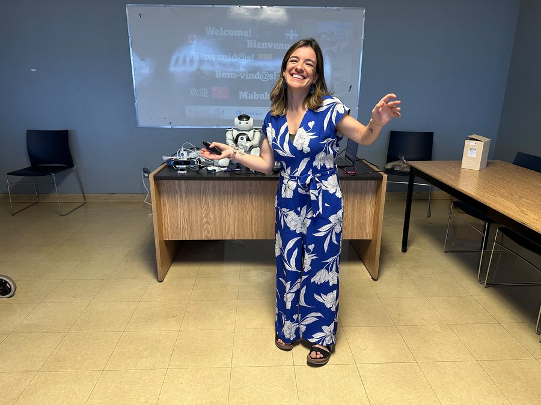

Sofia Santos Nunes
PhD Student in Mental Health @ McGill University

Know moreShow less
Sofia Santos Nunes is a PhD student in Mental Health at McGill University's Department of Psychiatry.
She holds a Master's degree in Clinical Psychology from the University of Lisbon and has nearly a decade of experience working on European and community-based projects related to aging, mental health, social inclusion, and technological innovation.
Before joining McGill, Sofia worked with organizations including AGE Platform Europe and Social Services Europe, contributing to research, advocacy, and policy initiatives focused on the rights and well-being of older adults.
Sofia is also an EPIC-AT Fellow and Editor-in-Chief of McGill Perspectives on Global Health. What motivated her to pursue this work was the fact that she loves to hear stories from older people around the world!